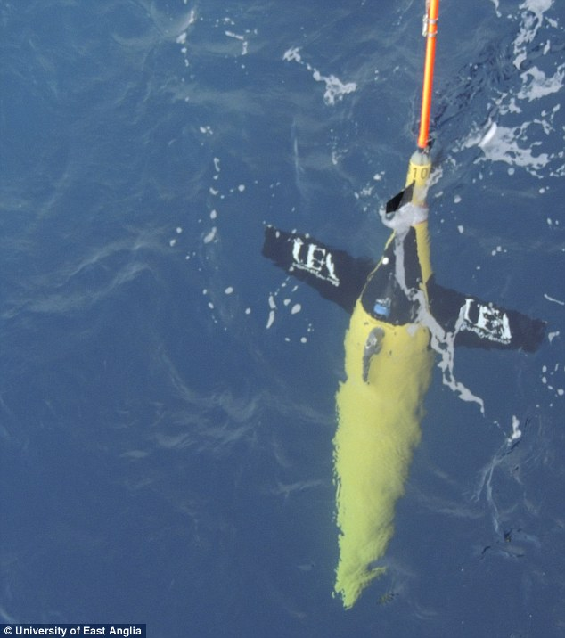

Real-time reporting of ecosystem metrics from acoustic sensors on gliders
Rob Blackwell
The ability of AUVs such as underwater gliders to carry active acoustic sensors pertinent to ecosystem research has been shown (Guihen et al. 2014). However, due to their high data volume creation, these sensors currently store data locally for retrieval and analysis once the platform is recovered.
One of the large appeals of gliders is directing them to regions of interest and receiving data in real-time. The current simple echosounder integrated into gliders generates 256 byte strings per ping (ping rate of 0.25 – 1 Hz). Newer, more complex wideband echosounders an order of magnitude more. These data need processing and constraining into metrics (acoustic area backscattering strength, vertical distribution, aggregation – e.g. Burgos and Horne, 2008) onboard the glider, which can then be transmitted back. Thus enabling ecosystem descriptors to be transmitted back to shore from the glider/AUV in real-time and realizing these platforms capabilities for ecosystem research relevant to both fisheries management and impact assessments.

This PhD project will work with state-of-the-art acoustic instruments to develop onboard processing capabilities to realize this challenge.
When acoustic data are displayed in echograms, aggregations and scattering of zooplankton and fish are evident forming diverse spatial patterns such as schools, shoals and diffuse clouds. Echotrace classification techniques enable this complex information to be simplified. This project will use existing acoustic datasets from wideband and narrowband echosounders to develop advanced compression methods that will allow the pertinent information to be transmitted down the low-bandwidth channel and hence influence the mission. Given that onboard processing is limited, our initial approach will be to state-of-the-art machine learning methods such as Deep Neural Networks (currently being used in lip-reading) which are trained expensively (offline) but need little run-time computation. Our aim is to develop a compression hierarchy in which the most needed information is sent first, followed by the nuances.
References
Guihen, Fielding, et al (2014) An assessment of the use of ocean gliders to undertake acoustic measurements of zooplankton: the distribution and density of Antarctic krill (Euphausia superba) in the Weddell Sea. Limnology and Oceanography Methods 12: 373-389.
Burgos and Horne (2008) Characterisation and classification of acoustically detected fish spatial distributions. ICES Journal of Marine Science 65(7): 1235-1247.
Supervisors
Dr Sophie Fielding, Professor Richard Harvey, and Dr Bastien Queste.